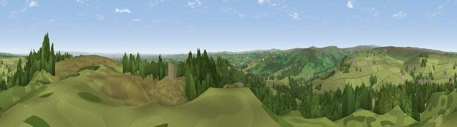

Viewpoint near Low Laithe
#13204 in England · top 20% of its area beats it · near Low LaitheWhere it is
The exact computed spot (SE 20600 65084). Click the marker for map links.
The view, rendered

A 360° render of this exact spot computed from the terrain model, tree cover and land cover — summer colours, afternoon light, calibrated against photographs of famous viewpoints. Real trees, hedges and buildings will differ in detail.
The panorama
Grey silhouette: terrain skyline in each direction (720 bearings, Earth curvature and refraction included). Dashed green: skyline with trees (+15 m) and buildings (+8 m) as obstacles. Blue strip: how far the ground is visible on each bearing.
Where the view opens
Wedge length = distance to the farthest visible ground on that bearing (vegetation-aware). Rings at 10, 25 and 50 km.
What fills the view
79% grassland · 18% woodland · 2% cropland · 1% built-up
Angular shares of the visible panorama (visual magnitude), not map area. Landscape diversity 0.27 (0–1 Shannon).
Key numbers
More beautiful places nearby
The staircase of upgrades: each row has a higher view potential than everything closer. Driving times are estimates from straight-line distance, calibrated against real road routing — check an actual route before setting out.
| Place | Direction | Drive | Score |
|---|---|---|---|
| Viewpoint near Low Laithe | ENE · 1 km | ~2 min | 66.1 |
| High Crag Ridge | WSW · 5 km | ~10 min | 67.6 |
| How Hill | ENE · 7 km | ~15 min | 72.9 |
| Viewpoint near Bewerley | W · 8 km | ~16 min | 76.8 |
| Viewpoint near Otley | S · 21 km | ~35 min | 77.5 |
| Viewpoint near East Witton | NNW · 21 km | ~35 min | 77.8 |
| Viewpoint near Kirby Knowle | NE · 33 km | ~51 min | 80.5 |
| Viewpoint near Thirlby | ENE · 35 km | ~54 min | 81.5 |
54.08126, -1.68662 · source: osm viewpoint · position refined by local search. Computed location — check access rights before visiting.